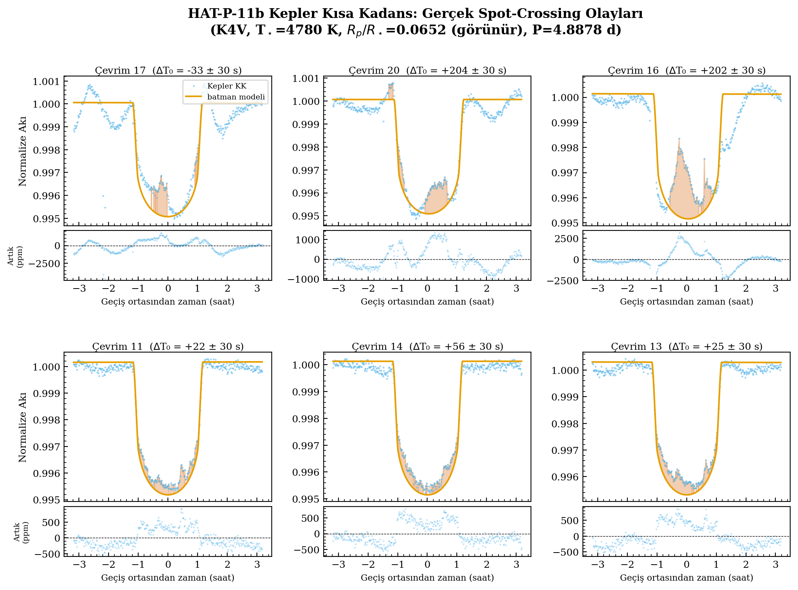
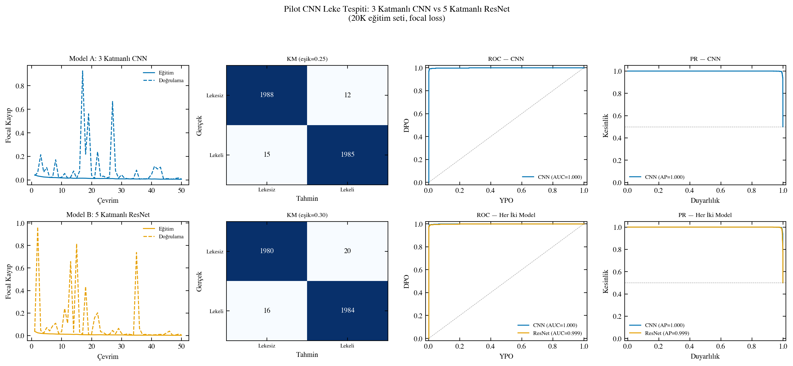
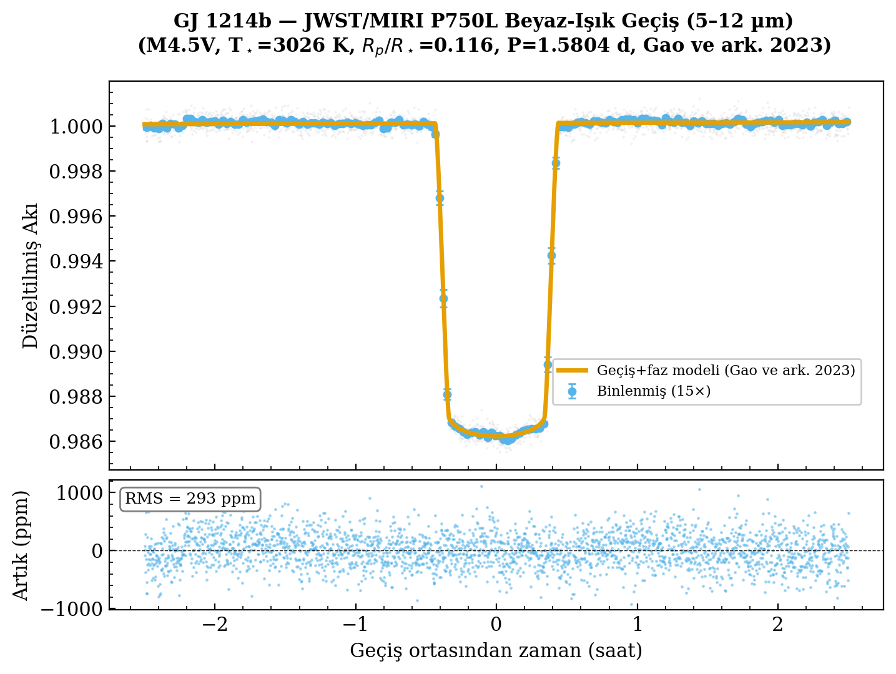
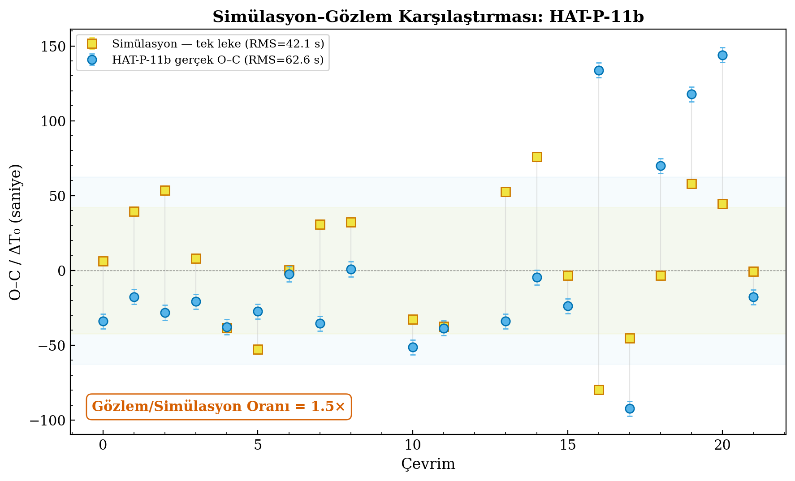
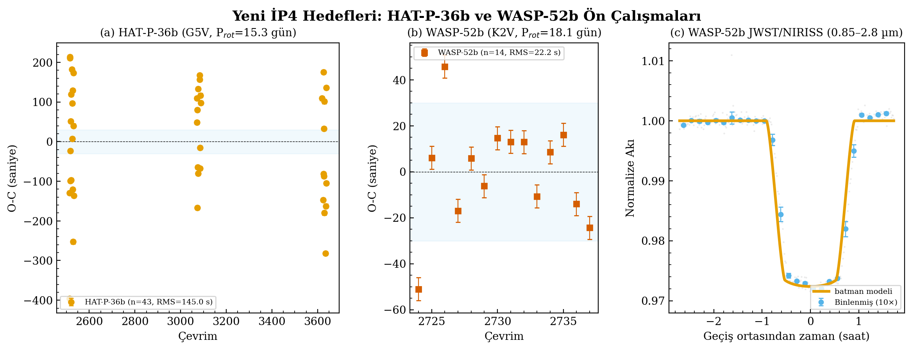

The problem
Starspots can distort transit light curves and shift apparent transit mid-times. Those shifts can mimic or mask the small timing signals used in TTV, orbital-decay, apsidal-precession, and ephemeris-update studies.
TUBITAK 3501 public project hub
Public project information for "Comprehensive Characterization and Correction of Starspot-Induced Systematic Effects on Exoplanet Transit Mid-Time Measurements", a 30-month research plan led by Dr. Arif Solmaz at Istanbul Health and Technology University.
Project purpose
Starspots can distort transit light curves and shift apparent transit mid-times. Those shifts can mimic or mask the small timing signals used in TTV, orbital-decay, apsidal-precession, and ephemeris-update studies.
The project combines physical transit-plus-spot modelling, systematic simulation, machine-learning triage, Bayesian correction, and real-data validation across active planet-host systems.
The goal is not automatic correction at any cost. The project will identify when correction is justified, when uncertainty inflation is safer, and when a transit should be excluded from timing work.
Motivating signals
Public site map
The site now presents project context, planned work, public data sources, open-science outputs, and update notes in one public-facing structure.
Project visuals




